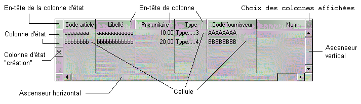

Les tableaux sont des objets standard de Xwin et Ywpf destinés à simplifier la gestion (affichage, consultation, saisie, sélections, duplication, déplacement, etc.) des données présentées en mode liste.
Visuellement, un objet tableau comporte les éléments suivants :

Des en-têtes de colonne, affichant les titres des différentes colonnes du tableau.
Une colonne d'état.
Des cellules, correspondant aux données du tableau.
De plus, on distinguera le cas échéant certaines lignes ou colonnes de tableau particulières :
La ligne sur laquelle l'utilisateur est positionné, nommée ligne courante.
Les lignes sélectionnées ou les lignes marquées.
Les colonnes marquées.
Le contenu des tableaux est géré comme une liste d'éléments, sur laquelle on va pouvoir effectuer, en particulier, toutes les opérations prévues par la gestion des listes du langage Diva.
Mais avant de détailler les diverses composantes des tableaux, passons en revue les traitements les plus souvent rencontrés pour ce type d'objet.